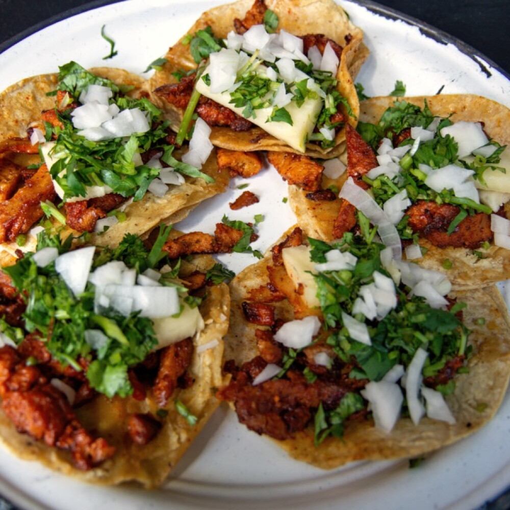

Tacos al Pastor recipes

Descripción
Los tacos al pastor son uno de los platillos más icónicos y populares de
la gastronomía urbana mexicana.
Consisten en finas rebanadas de carne de cerdo adobadas con chiles secos,
achiote y especias, acompañadas de piña asada, cebolla, cilantro y salsa
sobre tortillas de maíz calientes.
Ingredientes
- 500 g de lomo o cabezada de cerdo cortada en tiras delgadas
- 2 chiles guajillo desvenados y suavizados en agua caliente
- 1 chile ancho desvenado y suavizado en agua caliente
- 2 cucharadas de pasta de achiote
- 1/4 de taza de vinagre blanco o jugo de naranja agria
- 1/2 piña fresca cortada en rebanadas
-
1/2 cebolla blanca picada finamente y 1/2 manojo de cilantro picado
- Tortillas de maíz, sal y pimienta al gusto
Pasos de la preparación
-
Preparar el adobo: Licúa los chiles guajillo y ancho
junto con el achiote, el vinagre (o jugo de naranja), una pizca de sal,
pimienta y un diente de ajo hasta obtener una pasta suave.
-
Marinar la carne: Vierte el adobo sobre las tiras de
cerdo, asegurándote de cubriarlas por completo. Deja marinar en el
refrigerador al menos 2 horas (o idealmente toda la noche).
-
Cocinar la carne y la piña: En un sartén o comal muy
caliente con un poco de aceite, cocina las tiras de carne marinada a
fuego medio-alto hasta que estén bien doradas y cocidas. En el mismo
sartén, asa las rebanadas de piña hasta que se caramelicen ligeramente.
-
Picar los ingredientes: Corta la carne cocida en trozos
pequeños y pica la piña asada en cubitos.
-
Armar los tacos: Calienta las tortillas de maíz, sirve
una porción generosa de carne adobada, agrega piña asada, cebolla,
cilantro picado y tu salsa preferida.
Home